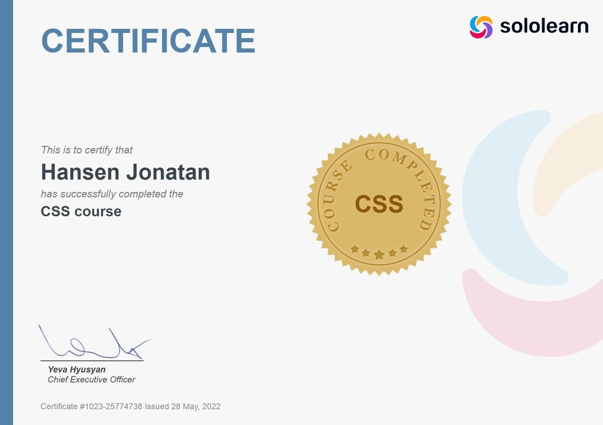
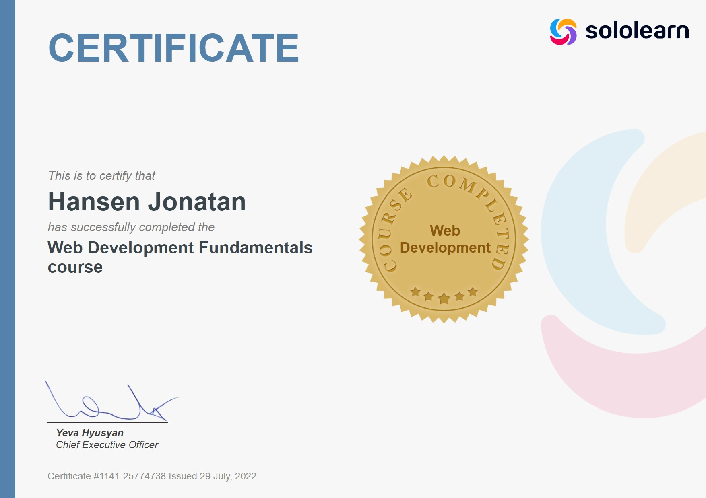
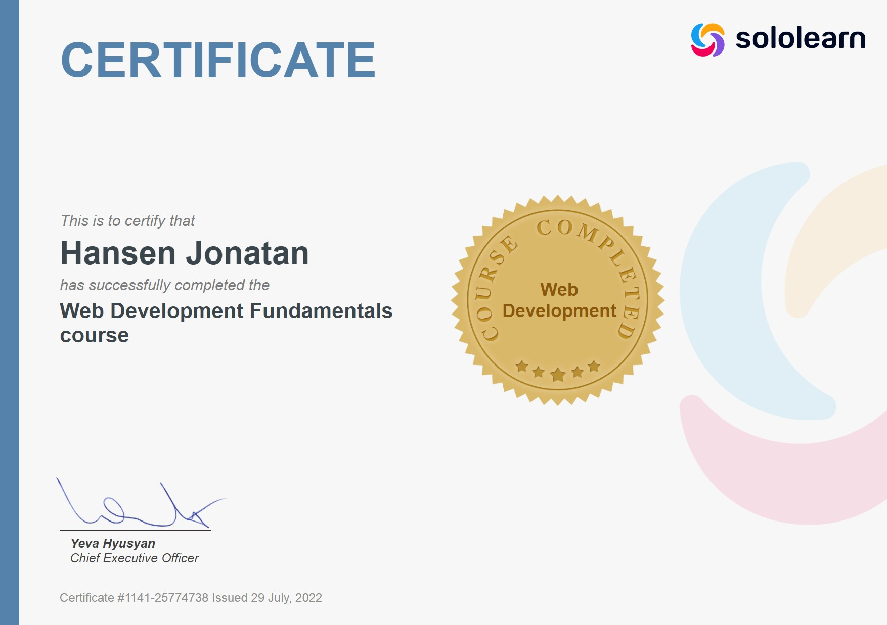
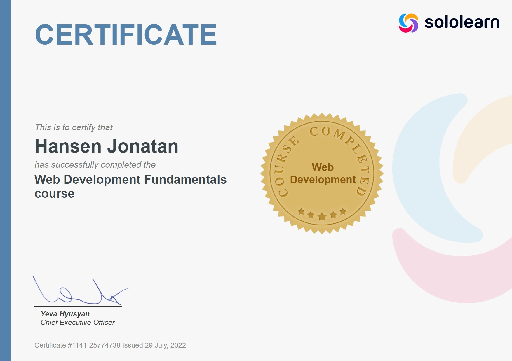

PRESTASI

 

Halo, selamat datang di website saya , kali ini anda sedang memasuki halaman about di dalam website saya .Dalam kesempatan kali ini saya akan memberikan biodata singkat saya .
Perkenalkan nama saya Hansen Jonatan, kalian bisa panggi saya dengan Hansen , saya lahir pada tanggal 27 September 2004 di kota Palembang , dan sekarang saya sedang tinggal di kota Batam. Saya menempuh pendidikan tingkat TK - SMK di sekolah Maitreyawira Batam , dan sekarang saya sedang melanjutkan pendidikan di sebuah universitas di kota Batam , yaitu Universitas Internasional Batam dan saya mengambil program studi Sistem Informasi .
1.
Q : Mengapa kamu memilih melanjutkan pendidikan di Universitas Internasional Batam?
A : Karena saya melihat bahwa Universitas Internasional Batam ini mendapatkan Akreditas A di dalam Program Studi Sistem Informasi.
2.
Q : Mengapa kamu mengambil program studi Sistem Informasi, kenapa tidak mengambil program studi yang lain ?
A : Karena saya dari kecil sudah suka dan hobi dalam bidang komputer .
3.
Q : Apakah kamu sudah belajar terlebih dahulu sebelum melanjutkan pelajaran di kuliah ?
A : Saya sudah belajar dasar-dasar dari pemograman secara otodidak dari youtube.
4.
Q : Apakah kamu dapat memberitahukan channel - channel youtube yang kamu tonton untuk belajar pemograman?
A : oke berikut rekomendasi chanel - channel youtube untuk belajar pemograman.
